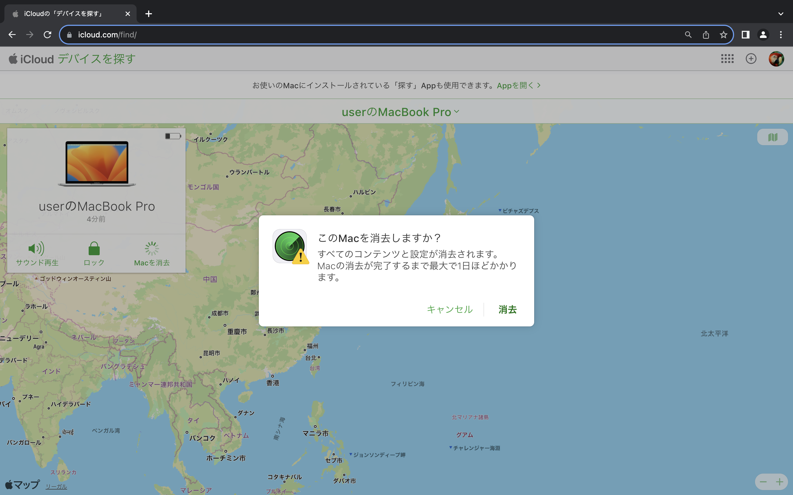
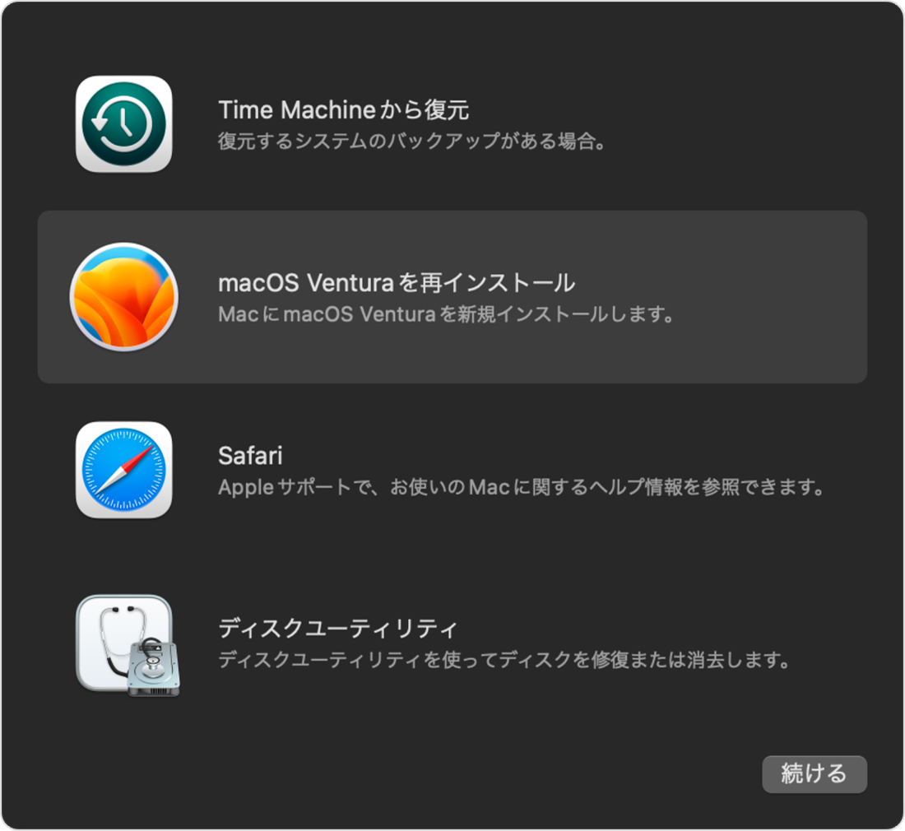

中古で購入したMacBook Pro 2019の挙動が色々とおかしかったので、初期化することにしたのだが、インターネット接続画面で「-1008F」というエラーが発生し詰んでしまった。
その後一ヶ月ほど奮闘し、とある方法で解決することができたので、共有しようと思う。
初期化のためにMacBook内のハードディスクを削除したあと、再起動するとWiFiの設定画面がでてきたので、自宅のWiFiに接続すると地球儀のイラストが周り出した。と思ったらその数分後に以下の画像のエラーコード「-1008F」が表示された。
仕方なく一度Macの電源を落とし、再起動すると...またインターネット接続画面から始まった。この後何度試してみてもエラー。私はここで詰んでしまい、解決するのにかなりの時間を要してしまった。
この記事を見て、エラーコード「-1008F」で時間を無駄にする人がこれ以上出ないようにする為にも、調べてわかったいくつかの解決方法とその手順を記していく。
1. Macを探すをオフにする。
まず調べて出てきたのが、「探す」アプリでMacBookが連携されている時にこのバグが発生するという報告だ。iPhoneにプリインストールされている。このアプリからMacBookとの連携を解除してエラーを突破できたという記事もいくつかあったので試してみたが、残念ながら私のMacBookでは効果が見られなかった。
また、ウェブサイトのiPhoneを探すからも解除してみたが、変化は見られなかった。
実は私のMacBookは中古で購入したものなので、前の使用者が「探す」を解除していなかったのかもしれない。
2. 別のWiFiに切り替える。
これまで家のWiFiだけで試してきたが、どうやらエラーになるWiFiとならないWiFiがある？ようで、他の人の家のWiFiやスマホのデザリングを使うと上手くいった人がいるようだったので試してみた。
しかし結果は家のWiFiの時と何も変わらず、有線で接続してもエラーは治らなかった。
3. macOS復旧から起動する。
Apple公式サイトに「option + command + R」を押して起動するとOS復旧画面から始まるとあったので試してみた。がやはりインターネット接続画面しか表示されなかった。
4. Optionキーを押しながら起動する。
もう修理に出すしかないのかと思っていたその時、海外のエラー「-1008F」を解説しているYoutube動画を見つけた。この動画にエラー「-1008F」についてのコメントが沢山あり、まだ試していない方法がいくつかあったので全て試してみることにした。すると、ある人のコメントの通りにしたことで、ついにエラーを回避することができた。下に私が解決できた方法を記そうと思う。
1 - MacBookの電源をオフにする。
2 - オプションキーを長押ししながら電源をつける。
3 - 地球儀のマークが消えた状態もしくは青色のアイコンが出てきた状態で始まるのでそのままインターネットに接続する。
4 - 接続が開始されたら、すぐに「option + command + R」を押す。(気持ち長めに)
2、3回失敗しましたが何度かあったが、この操作に加えインターネットを何度か切り替えているとエラーにならず無事に初期化に成功した。コツはオプションキーをネットのパスワード入力時まで長押ししておくことと、入力した直後から「option + command + R」を押すと上手くいった。optionを長押ししても白黒の地球儀が表示されたインターネット接続画面から始まる場合は、原因がわからないので最も確実な次の方法を試すといいだろう。


 rikumomo0407
rikumomo0407 ren_ichinose
ren_ichinose kurokky
kurokky